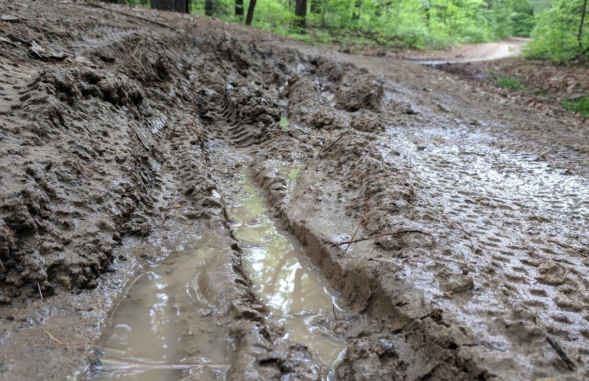

Reports
When people ride mud, they ruin the trails, and volunteers and municipal staff have to repair them. We do our best to maintain open/closed statuses but we can’t be everywhere all the time so please contribute your own intel on the state of trails you’ve just ridden.
| Trail System | Status | Tags | Last Update | Add Report |
|---|---|---|---|---|
| Apex Park | #ICE #MUDDY | 01/06/20 | edit | |
| Dakota Ridge | #OMGSOGOOD | 01/08/20 | edit | |
| Green Mountain | #SNAKES | 01/03/20 | edit | |
| Mount Falcon | #CROWDS #ICE | 01/06/20 | edit | |
| North Table | #HERODIRT | 01/09/20 | edit |
Maintaining Our Trails

Tough weather conditions with record rains, snow and freeze-thaw can make it frustrating for us mountain bikers (AND volunteer groups that maintain the trails). During these times, some don’t ride at all or opt to ride the road or stationary bikes. Others, out of desperation, ride the same trails they always do. Unfortunately, our trails in Colorado aren't meant to handle moisture quite like the Pacific Northwest. Riding wet trails in Colorado causes permenant damage.
Timing is pretty key, but choosing the right trails is also important. Bad conditions can be difficult to judge during the Fall, Winter and Spring which can be freqeuntly sloppy. Our trail reporting system is meant to alleviate the trial and error in choosing where to ride during these seasons.
IMPORTANT FACT: Jefferson County, the City of Lakewood, and the US Forest Service DO NOT have paid trail crews!!!! Nearly all of the work that goes into maintaining these trails are through VOLUNTEER efforts COORDINATED by fellow mountain bikers.